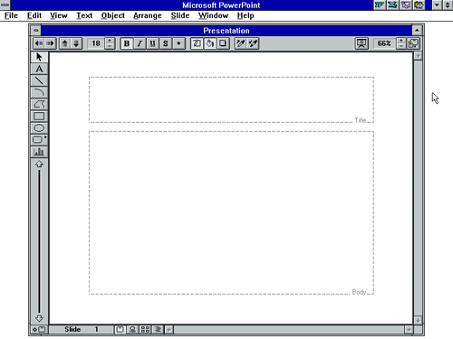
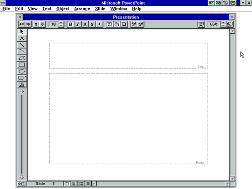

People actually used THAT to make presentations?
Well, I cut off the menu bar in the gif:

But yeah. Old versions of PowerPoint can be a pain in the ass. I highly recommend not using them.
Well, I cut off the menu bar in the gif:

But yeah. Old versions of PowerPoint can be a pain in the ass. I highly recommend not using them.